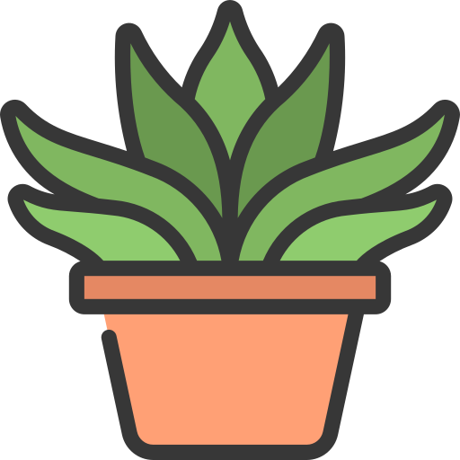
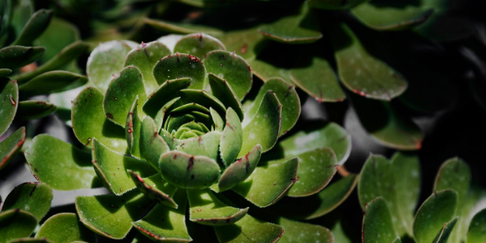
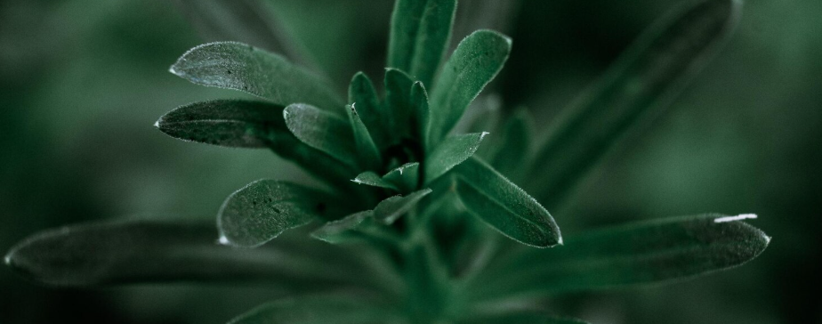
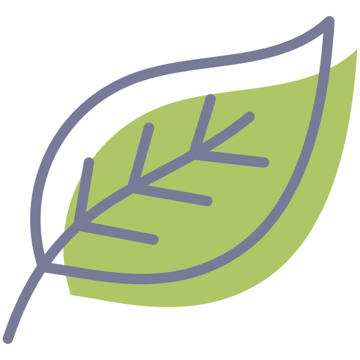
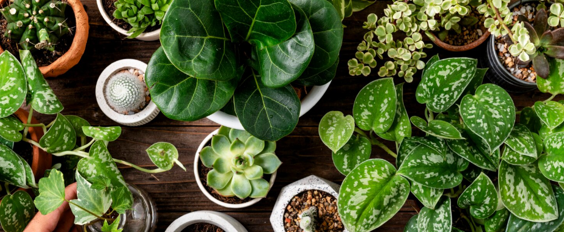

Ботанический дневник — это коллекция растений,
зарисовок и маленьких наблюдений за природой.
Здесь мы собираем сезонные истории, изучаем формы
листьев и замечаем красоту в самых привычных растениях.

Зелёные истории
Наблюдаем за растениями в течение сезона:
от первых нежных листьев до ярких осенних оттенков.
Записываем изменения, сравниваем формы и сохраняем
самые интересные моменты в нашем дневнике.

Цветочные заметки
Цветы меняются каждый день, и в этом их особенная
красота. Мы собираем наблюдения о цветении,
оттенках и необычных сочетаниях, превращая
короткие прогулки в маленькие открытия.


Листья и формы
Иногда достаточно одного листа, чтобы остановиться
и рассмотреть его внимательнее. Изучаем силуэты,
прожилки, фактуру и цвет, собирая собственную
библиотеку природных форм.

Записки из сада
«Самые интересные открытия начинаются с простого:
остановиться, посмотреть внимательнее и заметить то,
мимо чего обычно проходишь».